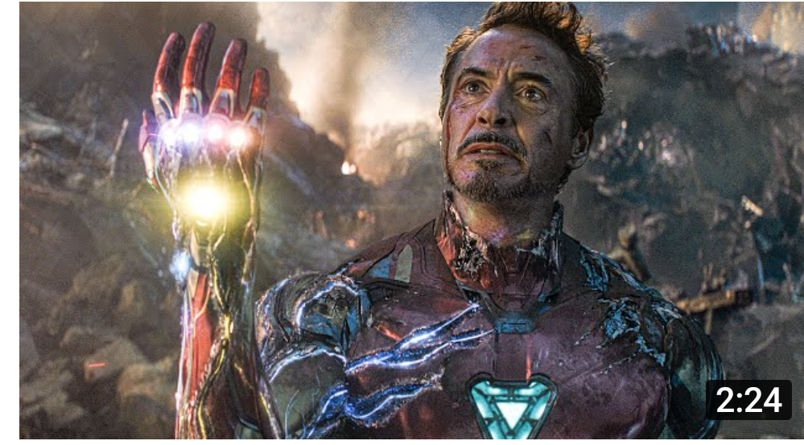

TONY STARK
HERE ARE THE INTRO, VIDEOS, ABILITIES, GAMES OF IRONMAN
IRON MAN
Adout the character
Iron Man is a fictional superhero appearing in American comic books published by Marvel Comics. The character was co-created by writer and editor Stan Lee, developed by scripter Larry Lieber, and designed by artists Don Heck and Jack Kirby. The character made his first appearance in Tales of Suspense #39 (cover dated March 1963), and received his own title in Iron Man #1 (May 1968)
Introduction
Anthony Edward Stark is the son of wealthy industrialist and head of Stark Industries, Howard Stark, and Maria Stark. A boy genius, he enters MIT at the age of 15 to study engineering and later receives master's degrees in engineering and physics. After his parents are killed in a car accident,he inherits his father's company.
POWERS
After being critically injured during a battle with the Extremis-enhanced Mallen, Stark injects his nervous system with modified techno-organic virus-like body restructuring machines (the Extremis process). [139] By rewriting his own biology, Stark is able to save his life, gain an enhanced healing factor, and partially merge with the Iron Man armor, superseding the need for bulky, AI-controlled armors in favor of lighter designs, technopathically controlled by his own brain. His enhanced technopathy extends to every piece of technology, limitless and effortlessly due to his ability to interface with communication satellites and wireless connections to increase his "range". Some components of the armor-sheath are now stored in Tony's body, able to be recalled, and extruded from his own skin, at will.
Wanna play a game?
IRONMAN GAME
 click here
click here
IRONMAN LAB
click hereHERE ARE SOME COOL VIDEOS OF IRONMAN
*press on video you wanna see
Funny clips of tony stark
The epic snap scene
All suit up scenes